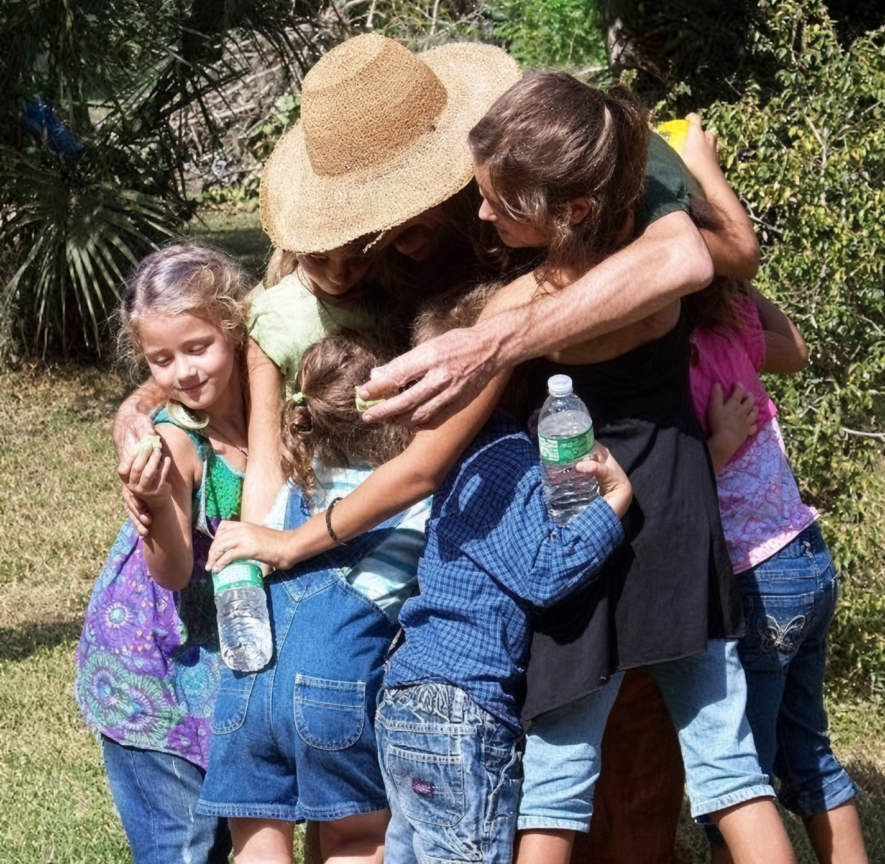

CHILDREN'S WORKSHOPS
The mission of our children's workshops was to teach kids and their parents about what's actually in their food. We gave tours of the farm's gardens, and nutritionists explained the ingredients in the processed foods we buy at the store, because what you can't pronounce probably isn't food. And we had good, clean farm fun, stuffing scarecrows and getting our hands in the soil to plant seeds.
The moment I realized teaching has a cumulative effect was when the children came back to see me at the market with vegetables they had grown themselves from the seeds I gave them. At some point in the future, with some help, we will start the workshops again.


The Lorax
Original workshop flyer
CHILDREN'S FARM WORKSHOP
Saturday, October 30, 2010
Farm talk · Where do veggies come from? · Food labeling · Veggies are alive · Plant your own · Food demo · Lunch · Farm tour